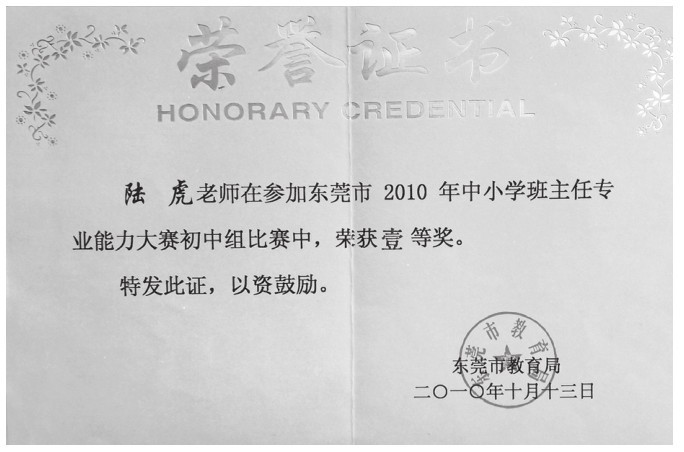

从2005年大学毕业至今，我已经有五年的班主任工作经历了。回顾自己这几年的班主任工作经历，我用两个字来概括，那就是“忽悠”！“忽悠”的本质是“不择手段坑蒙拐骗”，但我所说的“忽悠”是赞赏，是为了帮助学生改正缺点，激励他们奋勇向前。
我上次带的一个班里，有个学生，他聪明有余但细心不足，缺乏一定的韧性和耐力。他信心百倍地参加了物理奥赛培训班，结果在第二轮选拔的时候就落选了。在接下来的几天时间里，我发现他上课没精打采，作业也完成得乱七八糟，心情非常的低落。
我先找到他了解了一下他的心情状况，并分析了一下落选的原因，一边安慰一边找出他在学习态度上的一些不足，听得他频频点头，只是最后他沮丧地说，唉，现在太迟了，已经被淘汰了。
我说，其实，失败并不可怕，可怕的是因失败而丧失自信心。
他也很尴尬地说，我当时就是太自信了。
我说，能够认识到自己的问题所在，这就是一种成长。那如果上帝能够给你再来一次的机会，你会怎样面对物理奥赛的问题？他一听来劲了，反正是假如嘛，他信誓旦旦地说了很多的想法和努力方向。
我听他说完后，很平静地跟他说，请记住你刚才说的话，老师有一件事情还没有告诉你，我已经给你争取到了一个旁听的席位，你愿不愿意去呢？他腾的一下就站起来了，真的吗，老师？太谢谢你了！我说，先不用谢，由于奥赛班的位置是按照人数来安排的，所以你可能没有座位，你需要自带桌椅坐在教室后面听课，你愿意去吗？他这个时候却面露难色地说，老师，那多难为情啊，大家都会笑我的。我突然之间大声对他说，当年韩信有胯下之辱后成就一番功业，屈原被放逐才写成了千古绝唱《离骚》，你这点困难那算什么？
他说，老师，我怎么能跟这些伟大的人物比呀？
我凝神看着他的眼睛，斩钉截铁地说，在老师眼里，你就是未来的伟大人物！
这个孩子带着鞭策与压力，搬着凳子忐忑不安地走进了奥赛班的教室，而我也陪他一起坐在后面，装模作样地听一次物理奥赛课。第一节课结束以后，他找到我说，老师，你很忙，还有别的事情，要不你就别陪我了吧，我能行。我心里一听，暗喜了一把，我都十多年没有听过物理课了，一句没听懂啊，再让我听一节，我不知有多难受！但我表面上还是装作一副关切的样子，你一个人在那里，我不太放心啊！他很坚定地对我说，老师，你放心吧，我不会再让你失望了。
就这样，这个孩子每天搬着凳子往返于教室与奥赛班之间，而我也会在他奥赛培训时走到他的窗前，给他投去鼓励的目光，平时也会不断询问他在奥赛班的学习心得，给予精神上的支持。最后，出人意料的是，这名曾经被淘汰出奥赛培训班的学生，竟然在物理奥赛中夺得东莞市第一名的成绩，为自己、为学校拿回了奥赛的金牌。
我发现，每个学生都有没被别人发现的潜力，这潜力大到别人无法想象，就连他们自己也无法预估，但一旦被挖掘出来，会比真正的英雄还棒，所以每个学生都是天才。而我们班主任老师就是那个激励他们发掘潜能的动因，有时候，忽悠一下他们，又何妨呢？

作者参加班主任专业能力大赛获奖
以上文字是我在2010年参加东莞市班主任能力大赛时，在“教育故事叙述”环节的即兴演讲。有句话说，好孩子都是夸出来的。的确，班主任如果能用好赏识教育和激励教育的法宝，我们的学生一定能够绽放出超乎我们想象的能量。
心理学家威廉·杰姆斯也曾说过：“人性最深层的需要就是渴望别人的赞赏，这是人类之所以区别于其他动物的地方。”美国教育家卡耐基亦说：“使一个人发挥最大能力的方法是赞赏和鼓励。对于后进生来说，赞赏和鼓励不亚于雪中送炭，可以增强他们的信心和勇气，并从他们的内心激发出无穷无尽的积极动力。”
有人说“没有爱就没有教育”，同样地，没有赏识就没有教育。赏识源于发自内心地对学生的钟爱，对孩子成长与进步的喜爱，对教育事业的挚爱。赏识是一座桥梁，是精神相融、心灵交汇的桥梁，班主任老师如果学会尊重学生，赏识学生，就能走进学生的心灵，在班集体这一方沃土上，培养出绚丽的花朵。
班主任的赏识与激励，主要包括目标激励、言语激励、情感激励。
目标激励，在班级管理中，共同讨论并确定班级目标，在班级目标的基础上，确定自己的个人目标，如学习目标、交友目标、运动目标，等等，并制定行之有效的操作细则、监督机制、奖励措施。
语言激励，就是针对学生的个体差异，班主任选择不同的激励性话语。比如（1）最近怎么有些沉闷？我需要你的热情！（2）把简单的事做好，就是不简单；把平凡的事做好，就是不平凡！你能行！（3）也许你在别人眼里有很多不足，但在我眼里，你是最棒的！（4）你的潜力很大，对于你来说，只要好好挖掘，就没有不可能的！
情感激励，时常与学生进行心灵上的对话，和学生说自己的心理感受，关注孩子的情绪。从老师和家长的双重角度对孩子提出希望，效果会好很多。师生深厚的感情才能让一个班集体优秀，才能让每一个孩子更优秀！
激励教育，就是对孩子给予更多的鼓励，从多方面引导，用正能量来鼓励孩子的上进心。一位名人曾说过，“一个人如果没有被激励，他的潜能可能发挥到百分之二十到三十，而受到激励后，有赶超意识，他的潜能可能发挥到百分之八十到九十”。“孟母三迁”“陶母退鱼”“欧母画荻”“岳母刺字”，古代四大贤母的故事，那种舐犊情深和正气凛然的母爱，就是对孩子的激励，这种激励值得我们永远学习。用母爱般的博大，去关心、赏识、激励学生，恐怕应该就是师爱的至高境界吧。